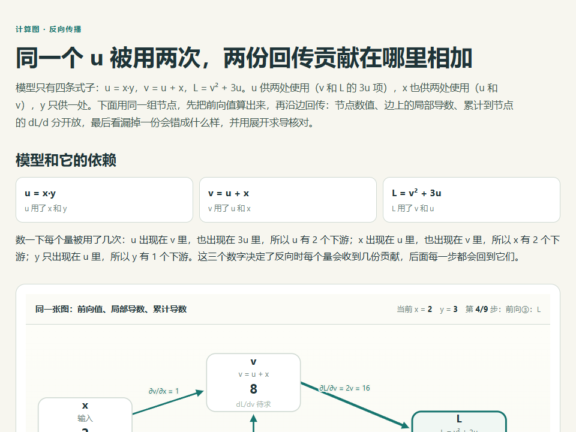
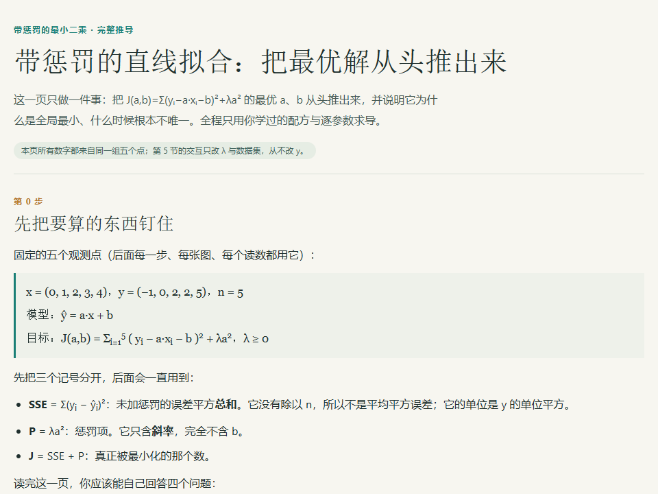
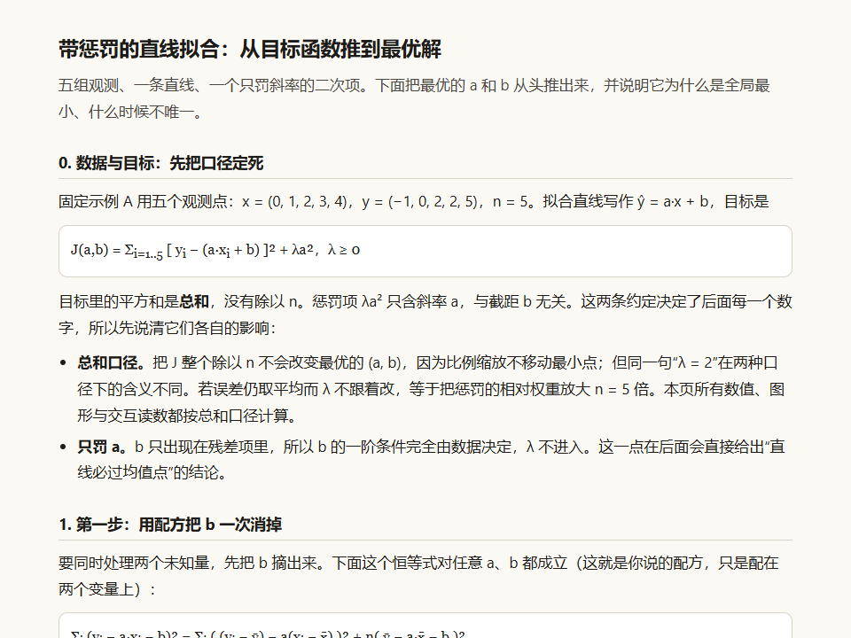
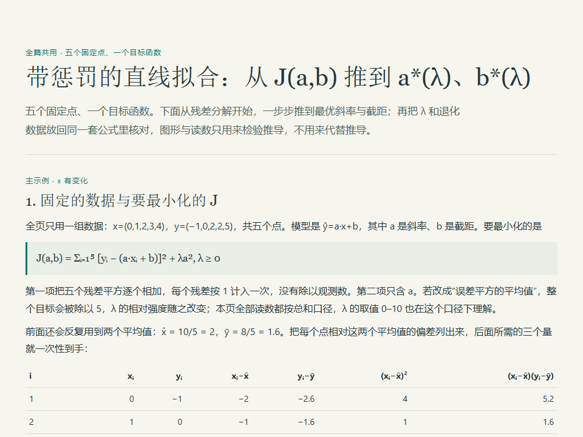

本地实验 · 2026-10-22 · 本轮结论已形成 · 未改线上
教练已前移：反向传播讲解更清楚，岭回归推导仍有退步
两题都已实现：先由教练依据用户需求选择表达方法，再把完整选中材料交给主 agent 的第一次请求。模型配置、方法库、原题和 Reader 与旧 C 保持一致，仅新增两份首次交付。
页面效果有进有退。反向传播的前移版更清楚地区分直接依赖与完整路径，适合作为桌面讲解的下一版基础；岭回归的前移版交互有价值，但核心推导出现符号错误，本题仍优先旧 C 第二次。
本轮支持“前移和完整供给确实生效”，不支持“前移后首次生成会稳定更好”。六份页面均原样保留，未修改线上。
查看两题的三页对照 ↓
2/2C 前移版实际交付
4/4旧 C 原页复用 · 不重新生成
¥1.92仅本轮新增费用保守上界
比较条件与证据区别
旧 C：作者先提交初步公开方案，随后由教练选方法，在首次写页面前提供完整材料。C 前移版的设计流程：根据用户需求先调用教练，再把选中方法全部材料放入作者首次采样；实际是否做到，以请求时序和首请求正文记录为准。
方法库、作者和教练配置、题目与 Reader 按冻结合同核对。新教练独立选型，不复用旧计划；每题只有一份新页对照两份旧页，不能当作严格隔离时序影响的重复实验。
旧轮评审仅作为明确标注的历史背景。本轮质量判断由根任务依据本轮实际比较填写，不由材料数量或时序自动推出。
完整报告 · 上轮三组报告
共享节点的反向传播
桌面整体概念讲解：前移版更好；细步进与小屏：旧 C 第二次更好；主动做漏项对照：旧 C 第一次最直接。三页六组数值均正确，差别主要是概念说明、当前输入文字同步和小屏可读性。
旧 C · 第一次
旧轮首次交付，原样复用

打开原始交互页 ↗
本轮匿名实际阅读与操作评审
- 正确性
- 六组前向值、梯度及漏项模拟数值正确；正确模式的一句总结却把 u 的总梯度用到 x→v 直达边，零贡献与符号概括也不准确。
- 阅读路径
- 默认例、反向累计、漏项实验、逐项展开连贯；主动比较漏哪一份最直接，但正文内部对直达分支有冲突。
- 操作效果
- 全部步进、后退、改输入和预设可用。漏项按钮能传播误差至两个输入；320px图较小，正文清单可读。
Rowan：本轮独立评审
旧页面原样复用，本轮不重新计费
时序与材料证据
内部样本编号：backprop-C1
process-reveal@2
旧轮流程：作者已有初步公开方案，随后教练规划，首次写页面前提供方法。
旧轮未以作者首次采样前供给作为干预。
首次写页面前，选中方法目录文件全文覆盖 5/5
实际交接证据
自主工具读取次数：0
页面实际适配：页面可见分步计算与可操作漏项比较；不以提供的方法文件数量推断这些设计的来源。
旧轮评审背景 · 不是本轮新盲评
正确性：六组终态和漏算实验均正确；一处让 u 的总梯度19也用于 x→v，应当用16；符号/零贡献的概括忽略了上游梯度。
阅读路径：明确区分前向值、局部导数与总梯度，静态说明完整；标为回传的虚线箭头实际指向前向，直接影响机制理解。
操作效果：8步、输入与漏算选择同步，未计算值用破折号；负数和抵消状态保留路径。窄屏公式表与图过密。
反向传播 · Cedar · 结构化记录 · 反向传播 · Cedar · 报告 · 截图与操作证据目录
旧 C · 第二次
旧轮首次交付，原样复用

打开原始交互页 ↗
本轮匿名实际阅读与操作评审
- 正确性
- 六组数值正确；负局部导数被概括成负贡献、漏项被概括成结果更小，负数平方又缺括号；一条直接边被写成只有一条路径。
- 阅读路径
- 0–11步细分局部导数、收到贡献和汇合；用同一微小变化解释两处作用相加，细粒度步进最清楚。
- 操作效果
- 后退和改输入同步，未知量用问号。320/640宽改成逐边列表，小屏可读性三页中最好。
Aster：本轮独立评审
旧页面原样复用，本轮不重新计费
时序与材料证据
内部样本编号：backprop-C2
process-reveal@2
旧轮流程：作者已有初步公开方案，随后教练规划，首次写页面前提供方法。
旧轮未以作者首次采样前供给作为干预。
首次写页面前，选中方法目录文件全文覆盖 5/5
实际交接证据
自主工具读取次数：0
页面实际适配：可见细分步骤与适配小屏的逐边表达；正文的负数泛化仍需独立验证。
旧轮评审背景 · 不是本轮新盲评
正确性：六组指定终态和补测负数状态、直接求导与差分均正确；仍有负 y 必然产生负贡献、漏算必变小、负数平方缺括号、把 L 值说成梯度值等解释错误。
阅读路径：共享节点的步骤和三种数量区分完整；320宽改用可读边列表，比单纯缩小整张图更清楚。
操作效果：输入重算、前后步进与窄矮视口操作完整；第10步 y 已收到38但节点仍显示问号。
反向传播 · Birch · 结构化记录 · 反向传播 · Birch · 报告 · 截图与操作证据目录
C 前移版
已首次交付

打开原始交互页 ↗
本轮匿名实际阅读与操作评审
- 正确性
- 六组数值、相消和漏项卡均正确；明确区分直接下游边与完整路径。改输入后核对卡仍引用默认19×3、16×1；另有上下游、阶段序号等编辑错。
- 阅读路径
- 桌面整体概念讲解首选：解释 x 收到的贡献已在 u 合并更长路径，y 的一条直接边也可对应两条完整路径，并与展开式连接。
- 操作效果
- 反向箭头实际翻转，步进/后退/输入同步；核对卡说明未完全同步。320px主图约256×148，标签过小，下方文字可读。
Sable：本轮独立评审
15 次调用 · 费用上界 ¥1.04017904
时序与材料证据
内部样本编号：backprop-D1
process-reveal@2
实际教练调用均早于首次作者请求；author_proposal 显式为空：1/1；演示页规划入口实际值：true
首作者请求内，选中方法的目录文件全文覆盖 5/5
首次写页面前，选中方法目录文件全文覆盖 5/5
实际交接证据
自主工具读取次数：0
页面实际适配：页面可见按步骤揭示、三类量分开、路径与展开项对应，符合本题理解目标。完整5文件确在首次作者请求，但不能将全部可见优点单独归因于示范。
岭回归的完整推导
按本题连续深入推导的目标，选择顺序为旧 C 第二次、旧 C 第一次、前移版。前移版可调退化代表线做得正确，但中心化恒等式、口径说明和边界推导问题使它不适合直接替代旧版。
旧 C · 第一次
旧轮首次交付，原样复用

打开原始交互页 ↗
本轮匿名实际阅读与操作评审
- 正确性
- 连续证明、全局与唯一性、各状态读数正确；退化λ=0两条非水平代表线没有经过均值点，却标为同样最优，是实质图解错误。
- 阅读路径
- 残差分解、中心化、优化b、剖面配方到二维最优点连贯，误差与惩罚对照清楚。
- 操作效果
- 状态切换与数值同步，正常图与残差正确；退化代表线错误。小屏表格可独立横滚，图内标签约5px偏小。
Quartz：本轮独立评审
旧页面原样复用，本轮不重新计费
时序与材料证据
内部样本编号：ridge-C1
process-reveal@2；compare-one-factor@3
旧轮流程：作者已有初步公开方案，随后教练规划，首次写页面前提供方法。
旧轮未以作者首次采样前供给作为干预。
首次写页面前，选中方法目录文件全文覆盖 10/10
实际交接证据
自主工具读取次数：0
页面实际适配：可见完整推导及同因素对照；图解的正确性需要与正文和读数分别核对。
旧轮评审背景 · 不是本轮新盲评
正确性：完整推导与所有要求的数值成立；退化 λ=0 的两条示例最优直线不经过 (2,1.6)，是实质图示错误。
阅读路径：长推导、数据表与图相互关联；没有把深入推导压成短卡片，但关于非均值参考点的限制表述过强。
操作效果：λ 与数据切换主要读数正确；退化解族图错误，320宽坐标标注较小。
岭回归 · Opal · 报告 · 岭回归 · Opal · 结构化记录 · 截图与操作证据目录
旧 C · 第二次
旧轮首次交付，原样复用

打开原始交互页 ↗
本轮匿名实际阅读与操作评审
- 正确性
- 本轮未发现核心推导或状态更新错误。正常/退化数值、整族最优线、全局与唯一性理由一致。
- 阅读路径
- 本题首选：保留可逐步复现的完整推导，固定示例与当前交互边界清楚，退化分支独立成立。
- 操作效果
- 正常λ0/2/10、退化λ0/2和切回均正确；退化图的说明与轴标题轻微重叠，320px图内文字约7px偏小。
Harbor：本轮独立评审
旧页面原样复用，本轮不重新计费
时序与材料证据
内部样本编号：ridge-C2
process-reveal@2；compare-one-factor@3
旧轮流程：作者已有初步公开方案，随后教练规划，首次写页面前提供方法。
旧轮未以作者首次采样前供给作为干预。
首次写页面前，选中方法目录文件全文覆盖 10/10
实际交接证据
自主工具读取次数：0
页面实际适配：可见深入阅读路径和图数一致的参数对照；本轮优势来自具体页面证据，不因其是旧版而降权。
旧轮评审背景 · 不是本轮新盲评
正确性：主求解与全局最小证明未发现实质错误。明确区分整个目标缩放与只平均误差，说明剖面目标为何成立；全部指定数值与退化情形正确。
阅读路径：先对每个a优化b，再用一元配方证明并回到二维，贴合读者背景；匿名评审按“深入推导且图数一致”用途的默认选择。手机数值表会把数字拆成多行。
操作效果：拟合、残差平方、剖面曲线、当前公式与唯一性状态保持一致，退化解族画对。页面额外承诺重开恢复参数，但在本次Reader实际重载中没有兑现；所要求的实时操作均正常。
岭回归 · Amber · 报告 · 岭回归 · Amber · 结构化记录 · 截图与操作证据目录
C 前移版
已首次交付

打开原始交互页 ↗
本轮匿名实际阅读与操作评审
- 正确性
- 交互结果正确，但定义δ=ȳ−a x̄−b后却写中心化残差−δ，正确应为+δ，复现步骤再次重复。另有平均误差口径、含0/0公式的退化推导和数据净拉力解释问题。
- 阅读路径
- 保留深入推导，没有把长文压成结论卡；但核心中间恒等式不成立，读者无法逐步复现，因此本题排在两份旧C之后。
- 操作效果
- 退化λ=0可调代表斜率，线均过均值点且SSE不变，交互有价值。规定状态与切换正确；320px主图标签约5.5px过小。
Lumen：本轮独立评审
14 次调用 · 费用上界 ¥0.87664912
时序与材料证据
内部样本编号：ridge-D1
process-reveal@2；compare-one-factor@3
实际教练调用均早于首次作者请求；author_proposal 显式为空：1/1；演示页规划入口实际值：true
首作者请求内，选中方法的目录文件全文覆盖 10/10
首次写页面前，选中方法目录文件全文覆盖 10/10
实际交接证据
自主工具读取次数：0
页面实际适配：可见完整推导、单因素曲线与退化代表线探索。完整10文件已进入首次请求，仍未避免推导错误，不能把材料供给当作正确性证明。
本次真正改了什么
旧流程是作者先给初步框架，教练随后选方法并在首次写页面前提供材料。新流程在作者首次采样之前完成教练规划；教练按用户原话、已读证据和既有教学上下文作判断，此时author_proposal明确为空。
两题真实请求均先教练request-000，再作者request-001；选中方法全部正文分别覆盖5/5、10/10文件，并有成功采样回执。后续prepare只复用结果，没有第二次教练调用。普通文本请求未增加前置调用。
本轮两题所选方法与各自旧C相同：反向传播process-reveal@2，岭回归另加compare-one-factor@3。方法自主读取次数为0，全文由宿主直接提供；反向传播交付未声明method_refs，岭回归声明了两种方法及应用范围。供给记录和作者声明均不等于模型内部理解或完整范例被照搬。
从这轮结果决定下一步
可以排除本轮完整选中材料没有进入首次请求的问题。前移版在反向传播的路径解释上出现具体优点，但岭回归说明最终数字正确仍不足以保证推导过程正确。
下一阶段应验证规划如何落实为准确的讲解和交互：深入推导需要核对中间等式与适用条件，交互理解需要核对改输入后的说明和图形。继续增加材料数量或统一要求短视频式首屏，不能直接解决本轮已经出现的问题。
本报告只测首次交付，没有启用完整教学审核修订循环。所列缺陷是原页的评审结果，未据此修改页面或补抽更好样本；也不据此断言当前线上审核模型已漏检这些页。
费用与范围
本轮费用保守上界 ¥1.91682816。本轮独立内部上限 ¥8，不等于用户指定金额。此前活动累计 ¥21.36272960 另列，不占用本轮额度；四个旧页面不重新生成、不重新计费。跨活动保守累计 ¥23.27955776。本轮 usage 估算 ¥1.91682816，未知实付预留 ¥0；预留不表示已知实付。
每题仅新增一次，对照两份非同期旧C结果；教练计划独立生成，模型配置和返回标识相同不代表已锁定服务端权重。这里只作本轮方向性比较，不能证明稳定收益或孤立的时机因果。
本题均自包含、需求已经较完整，尚未检验模糊需求澄清、课程或书籍检索中的前置规划效果；没有真实学习者实验。
前移同时意味着教练不再看作者先前方案。本轮chart-reveal@3没有被选中，不能据此声称先前CS336图表教师范例已经迁移成功。
实现保留在本地候选，接通的是明确演示页请求入口；未接到所有自然语言请求，未合入当前主工作树或部署线上。